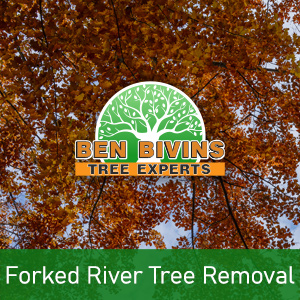
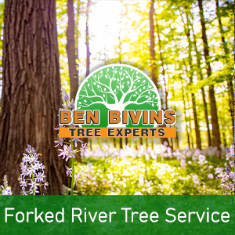

If you and your family require tree service in Forked River or tree removal in Forked River, your search is over. Our family-owned business has been providing top notch tree services to the Forked River community for years.
Forked River Tree Removal – Things to Know

Do you possess a dead or unsightly tree that needs to be removed? Tree removal is really a dangerous task that will require the proper equipment and basic safety practices. Even though it may be appealing to remove a tree yourself from your Forked River property, it’s really a decision that puts yourself or others at risk, without the proper training. There could be several factors why you are thinking about a tree removal in Forked River:- Tree is obstructing too much light in your yard
- Tree is dead or unhealthy as well as a probable safety hazard
- Tree is overgrown and poses a danger if substantial branches drop
- Tree was harmed in a weather event and is past the level of preserving
- You are planning on remodeling that will inevitably harm the trees
- Tree is dropping a great number of branches, leaves, or pine needles
Ben Bivins is fully insured and qualified tree company. Never take the risk of hiring an uninsured tree company or depending upon a friend to do this sort of work. Our team is professionally educated and our business has the appropriate qualifications to make sure your Forked River tree removal will be executed in the safest and most efficient possible way. Tree removal demands the use of serious machinery and hazardous equipment that should only be left to the professionals. Leave it to the experts! Contact us for a quote for your Forked River tree removal.
Tree Service in Forked River NJ – A Look at Our Services

We carry out all facets of Forked River tree service. These services include:- Tree Trimming – Is a tree in your yard overgrown? Is your yard in short supply of natural light resulting from an overgrown tree? Trimming a tree’s branches can make a big difference and may allow you to maintain a tree you otherwise considered eliminating.
- Pruning – Keep the trees happy and healthy. Pruning involves assessing a tree’s health and deciding to eliminate branches selectively to optimize its wellness and longevity.
- Crown Reduction – We are able to reduce the scale of your tree’s canopy with this method. Our team will evaluate your trees and make suggestions to eliminate specific limbs which will reduce canopy coverage.
- Emergency Tree Service – Have you got a fallen tree that requires immediate attention? Is there a tree which is on the verge of causing harm if it is not dealt with right away? You could be a prospect for emergency tree service.
If you’re a Forked River resident looking for tree service, Call today. Appointment time varies depending on weather, season and our current work load. Our representative will provide you with a quote and let you know date ranges available for service after evaluating your specific needs.
Your Source for Forked River Firewood
It’s no real shock that a Forked River tree removal business can have an excess supply of firewood! If you are looking for firewood for a wood burning stove or fireplace, call. Firewood supply availability can vary throughout the year.